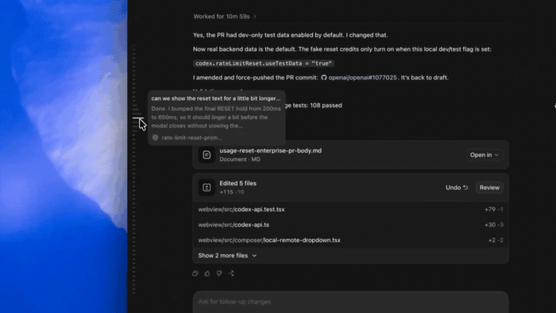
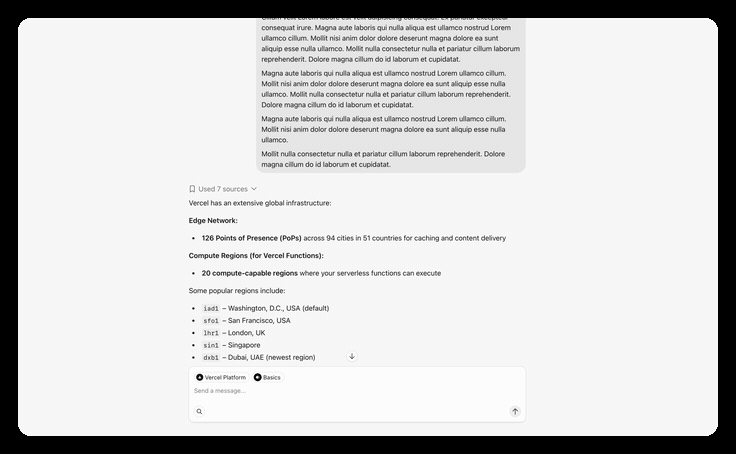
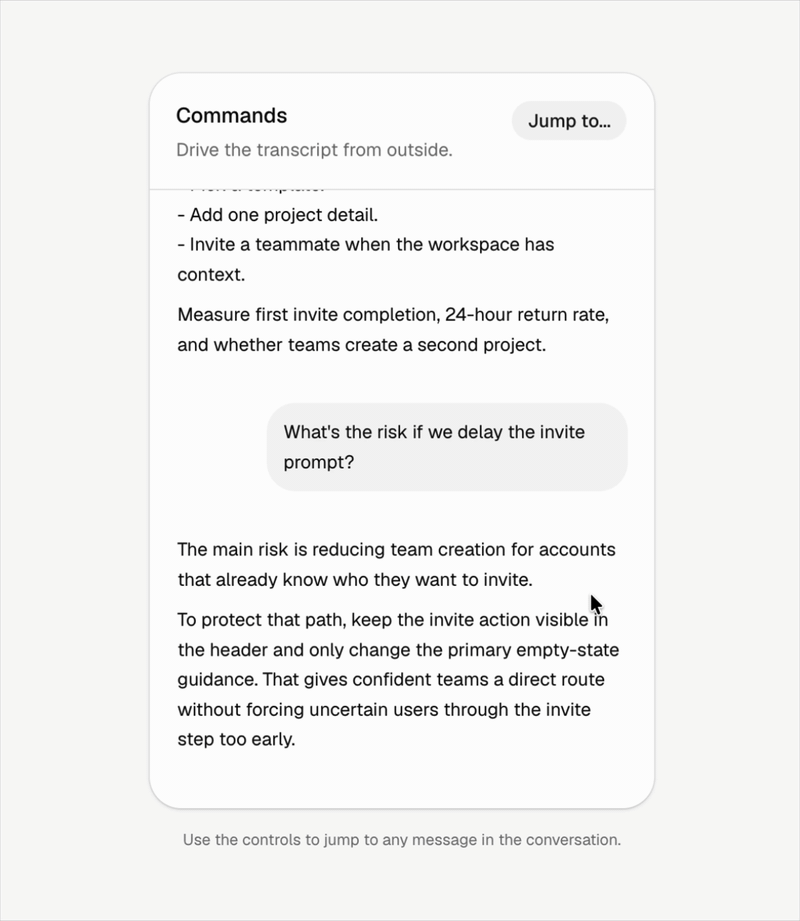
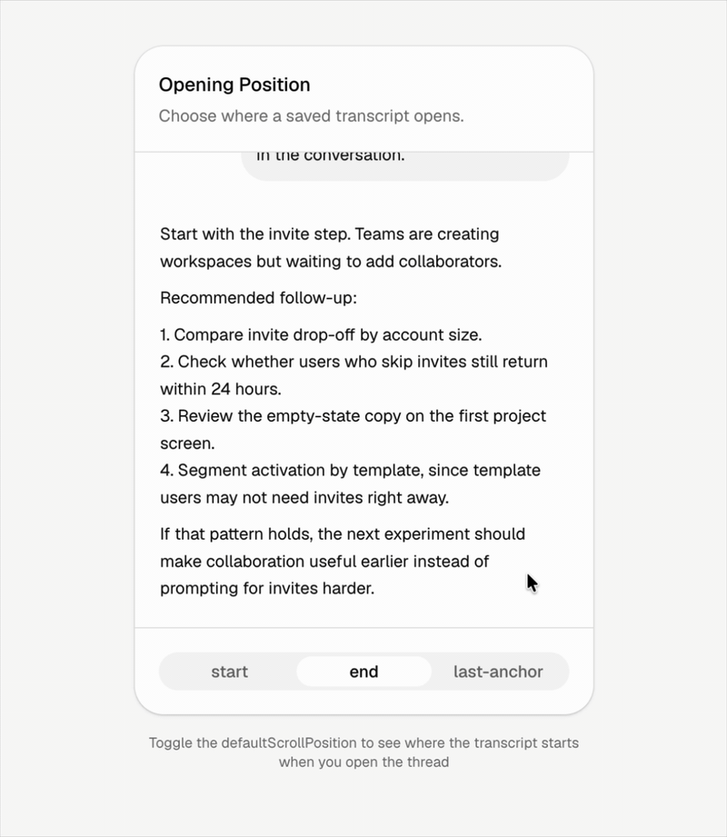
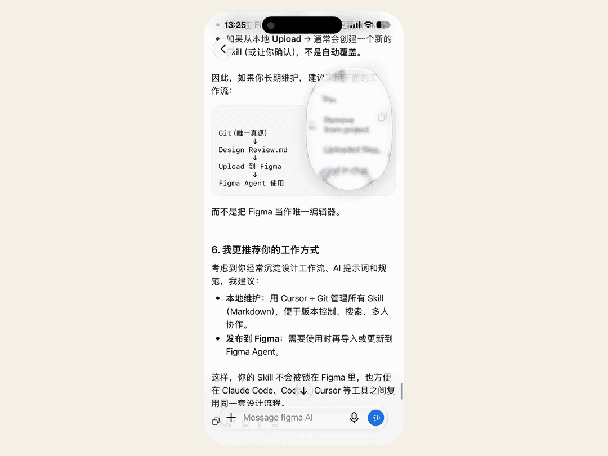
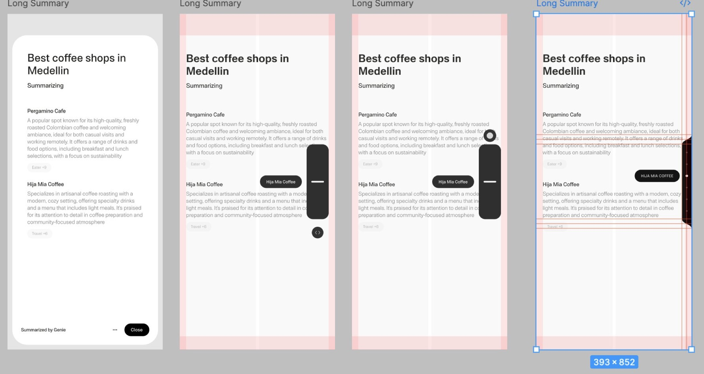
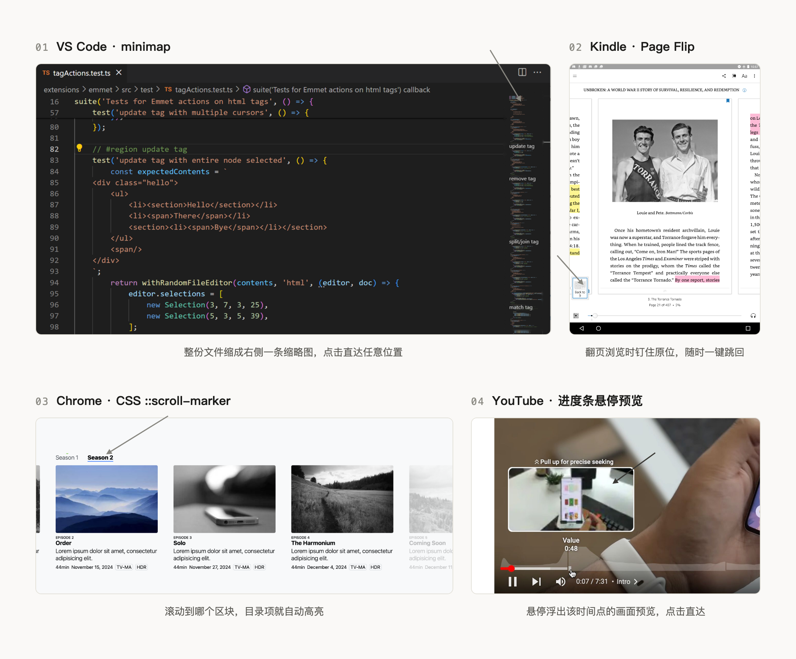
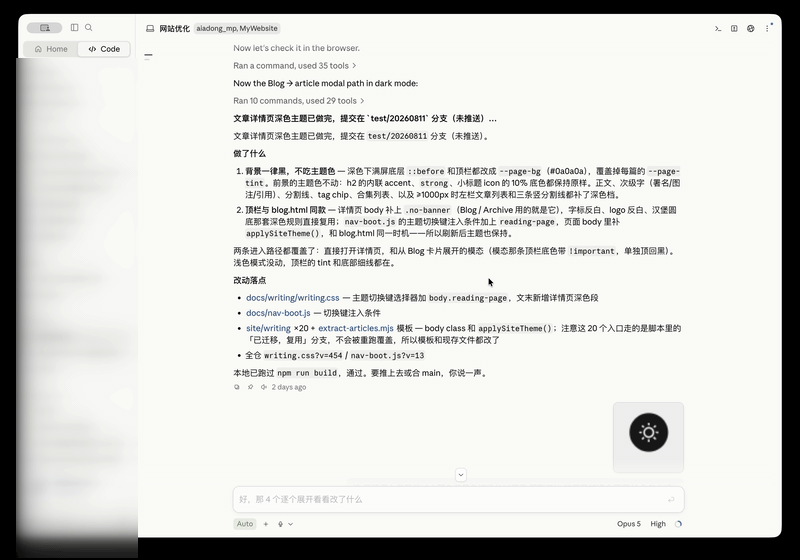

在与 Agent 对话过程中，一次聊下来，没有几十轮也得有十几轮；回头想看中间某一步的某个信息点，只能往上翻，翻起来可太费劲了。虽然窗口右侧边有个细长滚动条，但只能告诉你在处在什么位置，不告诉你那个位置有什么内容...这些槽点在社区、GitHub 上有很多。
针对这个课题，2025-2026 年出现了一批产品和研究，开始给长对话加上更方便用户回溯的导航机制；有四个案例分别代表了不同的设计方向与交互体验。
按单轮对话导航
•Codex 的对话导航栏用消息摘要做导航刻度。 6 月 27 日 Codex 桌面端上线了一系列针对体验流畅度优化的设计，其中就有针对这个长会话新设计的导航刻度，这列刻度线布局在对话区左边缘，样式为一排细线，每条对应一轮消息，hover 时浮出那一轮的预览卡片，点击单个刻度线，右边的chat Feed 自动移动定位。这个交互结构中，悬停等于低成本浏览消息摘要，点击等于跳转。

我觉得比较惊艳的设计是刻度线的交互动效之流畅感，体验感非常舒服。鼠标沿着这列刻度连续划过去的时候，刻度线之间不是断开的，整条导航栏有一种连续联动的感觉，会有一种愉悦感。相比起来，预览卡片尺寸的切换就有点太硬了，没有形状的过渡，就硬切了。
更加硬切的是右边 Feed 的定位跳转，也是直接跳过了；而且定位跳转的最大问题是，如果点击的那条刻度线对应的消息已经在当前屏幕内，点了之后没有任何反馈，页面不会动。跳转只在目标消息在屏幕外的时候才生效。对于用户来说，点了没反应和没点到是一样的，缺一个"你已经在这里了"的视觉确认。我觉得可以加一个类似消息条的扫光动效、或者背景色变化一下，至少用户能明确。
•Vercel 的 MessageScroller 选了另一种锚点：用户自己写的提问。 快速滚动时，助手的长回复淡出成背景，用户发过的每条提问收拢成右侧一列胶囊，点某条胶囊就落位到那一轮对话起点，文字胶囊本身就是锚点，过渡和定位共用同一个元素。

这个方案巧在消息延伸成为了导航胶囊条。本质是，新增一个功能，而不需要新造一个元素，直接从现有元素演变；因为任何一个新的元素，对用户都是一定程度的理解成本。同时，也不需要额外 token 成本来生成摘要，零幻觉风险，认知负担也小，因为用户对自己问过什么有天然记忆。
•shadcn 个人创建的开源项目中“消息滚动”组件更适合 App 端。今年 6 月 shadcn 个人网站 ui.shadcn.com 上开源了一套 MessageScroller，其中有两个设计点是针对快速搜索历史聊天的组件。
第一个组件是 Jumping to Messages，右上角的 "Jump to..." 按钮打开一个消息列表，点击任意一条就移动到到那轮对话的位置，滚动条同步联动。

第二个组件是 Opening Saved Threads，打开已保存的对话时可以选择定位到开头、结尾还是上次锚定的位置，底部切换 start / end / last-anchor 三个选项，不同选择对应不同的初始滚动位置。

•ChatGPT App 端做的是模糊搜索设计。这个功能今年 5 月底先在 Android 测试版里被拆包发现，随后正式上线。右上角菜单里有一个 "Find in chat" 入口，输入关键词后全文高亮匹配，搜索栏显示 "91 of 95" 这样的计数和上下翻页箭头，可以逐条跳转。这个就类似 iOS 26 的备忘录，都是以用户的记忆词去搜索。

•设计师 Nelson Noa 带内容标签的侧边滚动条 这个设计师是 Genie App 的联创/艺术总监，他为 Genie 做的 shader 动效曾在设计圈刷屏。为他联合创办的 Genie 做了一个带内容标签的滚动条。他的探索方案是拖动时滚动条旁边浮出当前小节名称，滚动条本身带刻度。

•"长内容需要预览加跳转"是一个验证了十多年的交互模式，现在来到了 AI 对话这个新场景，但需求一直都在。VS Code 的 minimap、Kindle 的 Page Flip、Chrome 原生的 CSS ::scroll-marker，再到 YouTube 进度条的悬停预览，都是同一个结构。

上面几种方案的锚点都是消息轮次，导航规则是第几轮问了什么、第几轮答了什么。我觉得更适合于泛生活类、泛知识类的通用 AI chat。大部分用户会在一个 chat 页面聊各种各样的主题方向，各种混在一起，这时候，按单个问答导航就非常精准。
用户可自主选择分章
在另一种垂直需求场景下，AI 对话正在从问答演变成围绕定向的任务执行。比如 Coding Agent，Claude Code 的一个会话里往往连着做完好几个任务，改一个深色主题、调一个切换动效、再修几个 bug，用户想找的是"改主题那一段在哪里"，而那一段可能横跨几十条消息，逐条消息的锚点反而不精准。任务的边界在哪里，用户自己最清楚。
Claude Code 桌面端的做法就是把分章的选择权交给用户，今年 5 月就有用户在 GitHub 上讨论这个功能。右键任意一条 AI 消息，菜单里有一个 Pin as chapter，钉完之后左上角的浮动目录里就多出一条章节，点它就跳到对应位置，目录第一项固定是 Session start。
底层是一个叫 mark_chapter 的工具，这个工具是开放给 AI 调用的，设计意图是让 AI 在干活的过程中自己判断"这里该分一章了"，把导航粒度从消息轮次升到工作阶段；不过官方文档还没有写清它什么时候会主动分章，我每次都是手动钉的。真要让 AI 自动分章，难点也很明显，分得太碎或者太粗都会让导航变得没用，这个判断标准目前还没有定论。

未来的 AI 用户体验会分布在更小的、有明确范围的、结构化的界面上，但聊天界面还会是大部分 AI 产品的默认形态很长一段时间，因为与 AI 的底层交互仍然是对话，增加导航是当下最务实的设计投入。
本文 Codex 导航栏与生态扩散信息来自 OpenAI 官方推文与工程负责人 Tibo Sottiaux 汇总帖；MessageScroller 组件信息来自 shadcn/ui 文档与 changelog；Nelson Noa 设计稿来自其个人推文；案例来自 VS Code 文档、Mux 开发者文档、Amazon 专利 US9939996B2、Chrome 开发者博客